library(dplyr)
#>
#> Attaching package: 'dplyr'
#> The following objects are masked from 'package:stats':
#>
#> filter, lag
#> The following objects are masked from 'package:base':
#>
#> intersect, setdiff, setequal, union
library(ggplot2)
library(ggside)ggside
The package ggside was designed to enable users to
add metadata to their ggplots with ease. While adding metadata
information is not extremely difficult to do with geom_tile
or other geoms, it can be frustrating to the user positioning these
geometries away from the main plot. Additionally, if the user wants to
use a color guide with the fill aesthetic, then they may
run into conflicts when one layer uses a discrete scale and another uses
a continuous scale.
Motivation
Lets look at a very simple example set using dplyr to
summarise the diamonds dataset.
summariseDiamond <- diamonds %>%
mutate(`Cut Clarity` = paste(cut, clarity)) %>%
group_by(`Cut Clarity`,cut, clarity, color) %>%
summarise(n = n(),
`mean Price` = mean(price),
sd = sd(price))
#> `summarise()` has grouped output by 'Cut Clarity', 'cut', 'clarity'. You can
#> override using the `.groups` argument.
ggplot(summariseDiamond, aes(x = color, y = `Cut Clarity`)) +
geom_tile(aes(fill = `mean Price`))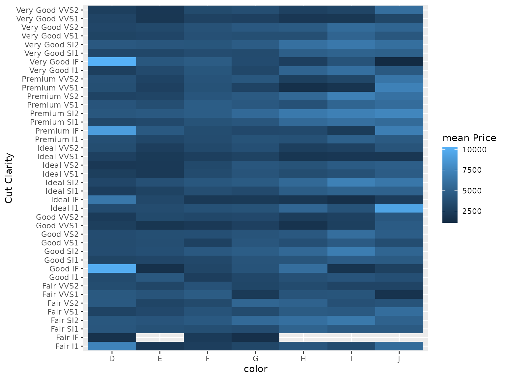
p <-ggplot(summariseDiamond, aes(x = color, y = `Cut Clarity`)) +
geom_tile(aes(fill = `mean Price`)) +
geom_tile(aes(x=0, fill = cut))
pAs you can see, trying to place a colorbar causes an error because
the previous geom_tile call has already mapped
mean Price to fill and has deemed the scale as
continuous. Thus a categorical variable is unable to map to the
fill aesthetic anymore.
However, you could map another continuous variable, but this will place these to the same guide, shifting the limits and washing out all color.
summariseDiamond <- summariseDiamond %>%
group_by(`Cut Clarity`) %>%
mutate(`sd of means` = sd(`mean Price`))
ggplot(summariseDiamond, aes(x = color, y = `Cut Clarity`)) +
geom_tile(aes(fill = `mean Price`)) +
geom_tile(aes(x=0, fill = `sd of means`))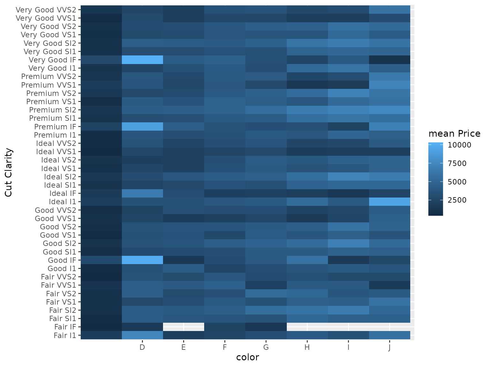
Using ggside allows for aesthetics to be mapped to a
separate scale, which can also be controlled with
scale_*fill_gradient functions (more on this later).
ggplot(summariseDiamond, aes(x = color, y = `Cut Clarity`)) +
geom_tile(aes(fill = `mean Price`)) +
geom_ysidetile(aes(x = "sd of means", yfill = `sd of means`)) +
scale_yfill_gradient(low ="#FFFFFF", high = "#0000FF") 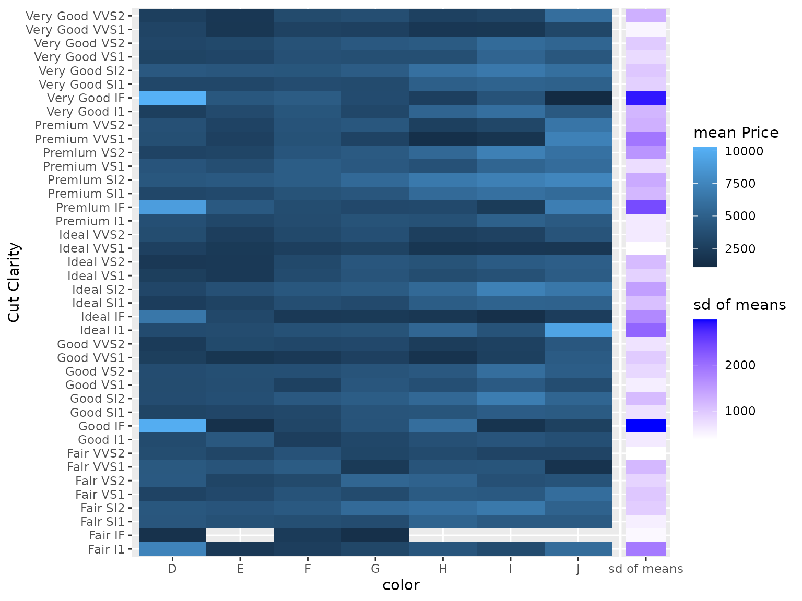
ggplot(summariseDiamond, aes(x = color, y = `Cut Clarity`)) +
geom_tile(aes(fill = `mean Price`)) +
geom_ysidetile(aes(x = "max", yfill = after_stat(summarise),
domain = `mean Price`), stat = "summarise", fun = max) +
geom_ysidetile(aes(x = "mean",yfill = after_stat(summarise),
domain = `mean Price`), stat = "summarise", fun = mean) +
geom_ysidetile(aes(x = "median",yfill = after_stat(summarise),
domain = `mean Price`), stat = "summarise", fun = median) +
geom_ysidetile(aes(x = "min",yfill = after_stat(summarise),
domain = `mean Price`), stat = "summarise", fun = min) +
scale_yfill_gradient(low ="#FFFFFF", high = "#0000FF") 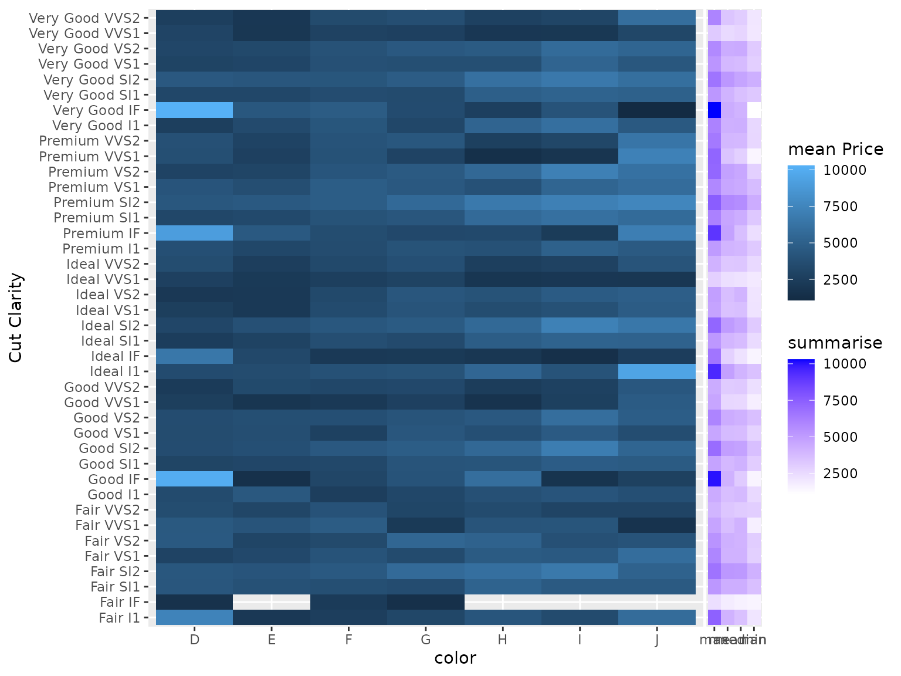
.tmp <- summariseDiamond %>% group_by(`Cut Clarity`) %>%
summarise_at(vars(`mean Price`),.funs = list(max,median,mean,min)) %>%
tidyr::gather(key = key, value = value, -`Cut Clarity`)
ggplot(summariseDiamond, aes(x = color, y = `Cut Clarity`)) +
geom_tile(aes(fill = `mean Price`)) +
geom_ysidetile(data = .tmp, aes(x = key, yfill = value)) +
scale_yfill_gradient(low ="#FFFFFF", high = "#0000FF") 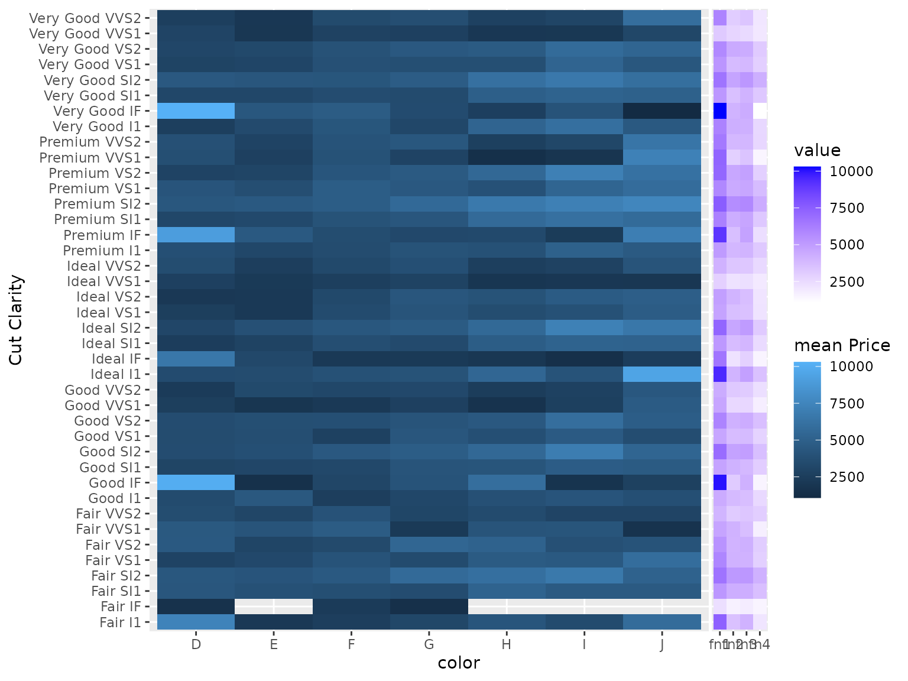
Unfortunately using xfill or yfill with
geom_xsidetile or geom_ysidetile respectively
will lock its associated scale with the first layer. So you cannot first
assign yfill to a discrete scale and then add a layer with
yfill maps to a continuous variable or vise a versa. For
example, the following code still produces an error. This is largely due
to the original motivation for making this package, but at least
ggside can give some ease to plotting information to
the sides of the main figure.
p <- ggplot(summariseDiamond, aes(x = color, y = `Cut Clarity`)) +
geom_tile(aes(fill = `mean Price`)) +
geom_ysidetile(aes(yfill = `sd of means`)) + #sets yfill to a continuous scale
geom_ysidetile(aes(yfill = cut)) #attempting to add discrete color values
pHow to Use
Geom
geom_xside* and geom_yside* both extend the
ggplot2::Geom* environments. As you may expect,
geom_xside* allows you to place geometries along the x-axis
and geom_yside* allows placement along the y-axis. All of
the geom_*side* functions provide a variation on the color
aesthetics colour/fill. The variants are named
xcolour and xfill or ycolour and
yfill for their respective xside or
yside geoms. These aesthetics will take precedence over
their more general counterpart if assigned. This allows for certain
geoms to be plotted on different color scales - particularly useful when
one requires a discrete scale and another requires a discrete scale.
Available Geoms
The following geoms are currently available to use right away from
the ggside package. Each of the following ggproto
Geom*’s are total clones to GeomXside* or
GeomYside* with the only variations being the additional
color aesthetics. The geom_*side* functions return a
ggside_layer object. When a ggside_layer is added to a
ggplot, the plot is transformed into a ggside object which has
a different ggplot_build S3 method. This method is what
allows for the side geoms to be plotted on a separate panel.
- GeomBar
- GeomBoxplot
- GeomDensity
- GeomFreqpoly
- GeomHistogram
- GeomLine
- GeomPath
- GeomPoint
- GeomText
- GeomTile
- GeomViolin
Facets
Technically speaking ggside’s main workhorse is
hacking Facet framework. Whenever a standard
ggplot object is converted to a ggside object,
the current Facet ggproto class is replaced to one that is
compatible with ggside. All geom*side variants
are plotted in a panel adjacent to the axis their name implies. All
vanilla ggplot2 geometries are plotted in the main
panel.
How its done
XLayer and YLayer
Each geom_*side* variants function return an
XLayer or YLayer which both extends
ggplot2:::Layer. Currently, only
Layer$setup_layer is overwritten to add column
PANEL_TYPE to the data. This column will contain
"x", or "y" which will help map data to the
correct panel. Data missing the PANEL_TYPE column (or
containing values other than "x" or "y") is
assumed to be mapped to the main panel. The values in
PANEL_TYPE help predict which extra panels needed to be
drawn per main panel produced by the original Facet class
the ggplot holds.
Facet
Three main methods are overwritten in order to make
ggside work. compute_layout,
map_data, and draw_panels. The
compute_layout will first call the base Facet’s method, and
then will will build more panels based on the attached
ggside object. map_data will take extra care
to ensure data is mapped to the proper panel using
PANEL_TYPE as well as any other facet variables passed.
draw_panels which is responsible for rendering all panels
correctly.
Extending
Currently, ggside works with ggplot2’s
three base facet classes, FacetNull, FacetWrap
and FacetGrid. If you wish to extend ggside to
another package’s custom facet function, then you must also export a
as_ggsideFacet S3 method, which will be called when an the
ggplot is converted to ggside or whenever a
new facet is added to the plot. This method should return a ggproto
object that inherits from the Facet group. Helpful computed
variables in the layout object are PANEL_TYPE
which indicates if the PANEL expects a side geom or default
geom, and PANEL_GROUP which helps clarify which
PANEL’s are grouped together in a facet. These additional
computed variables and the ggside object passed to
params will have the information needed to help you draw
panels for you custom facet with ggside.
Examples with Facets
i2 <- iris %>%
mutate(Species2 = rep(c("A","B"), 75))
p <- ggplot(i2, aes(Sepal.Width, Sepal.Length, color = Species)) +
geom_point()
p2 <- p + geom_xsidedensity(aes(y = after_stat(density))) +
geom_ysidedensity(aes(x = after_stat(density))) +
theme_bw()
p2 + labs(title = "FacetNull")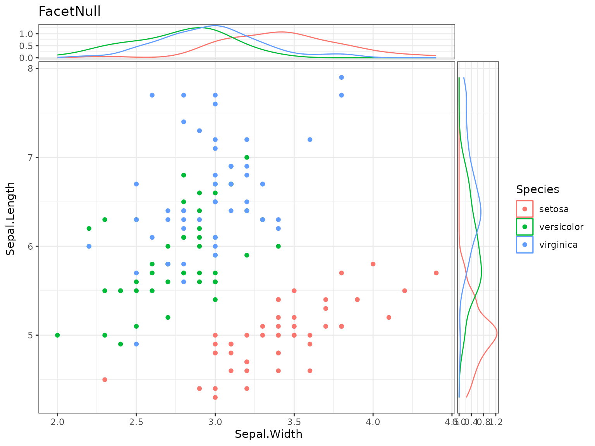
p2 + facet_wrap(Species~Species2) +
labs(title = "FacetWrap") +
guides(x = guide_axis(check.overlap = T))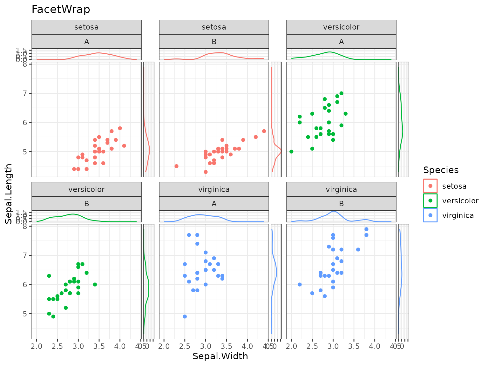
p2 + facet_grid(Species~Species2, space = "free", scale = "free_y") 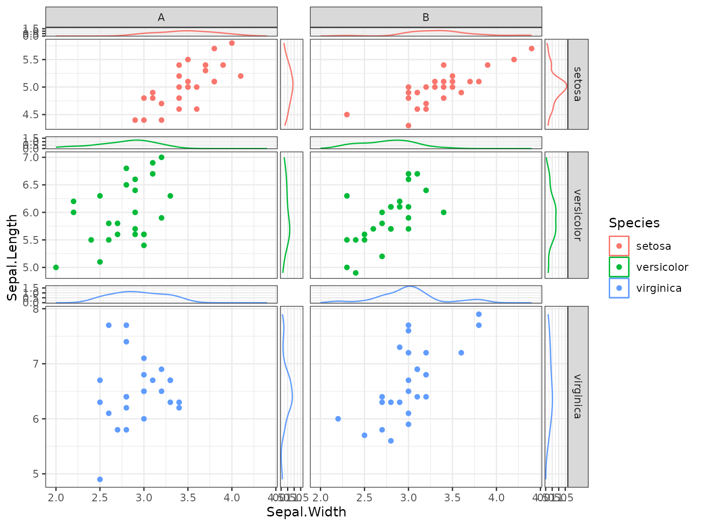
Further control on how the sideFacets are handled may be
done with the ggside function.
p2 + ggside(x.pos = "bottom", y.pos = "left") +
labs(title = "FacetNull", subtitle = "Xside placed bottom, Yside placed left")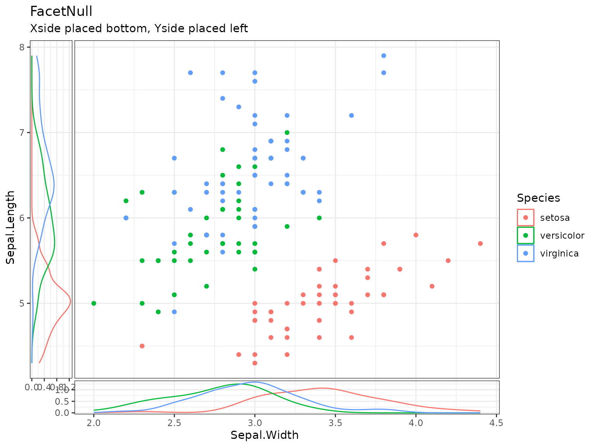
When using having multiple panels, it may be handy to collapse side panels to one side, which helps save space and computation time!
p2 + facet_wrap(Species~Species2) +
labs(title = "FacetWrap", subtitle = "Collapsing X side Panels") +
ggside(collapse = "x") 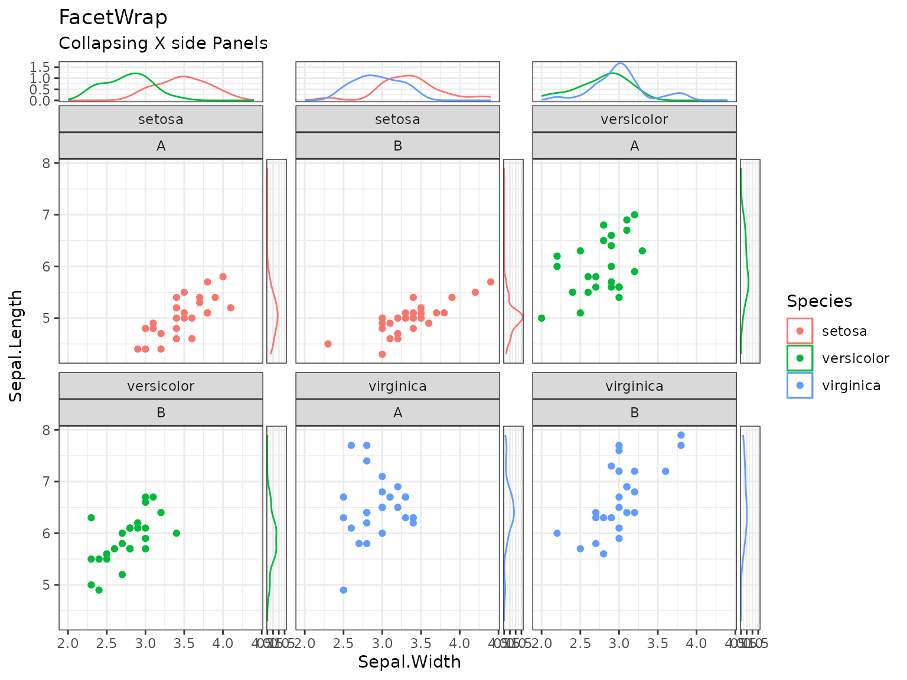
p2 + facet_grid(Species~Species2, space = "free", scales = "free") +
labs(title = "FacetGrid", subtitle = "Collapsing All Side Panels") +
ggside(collapse = "all")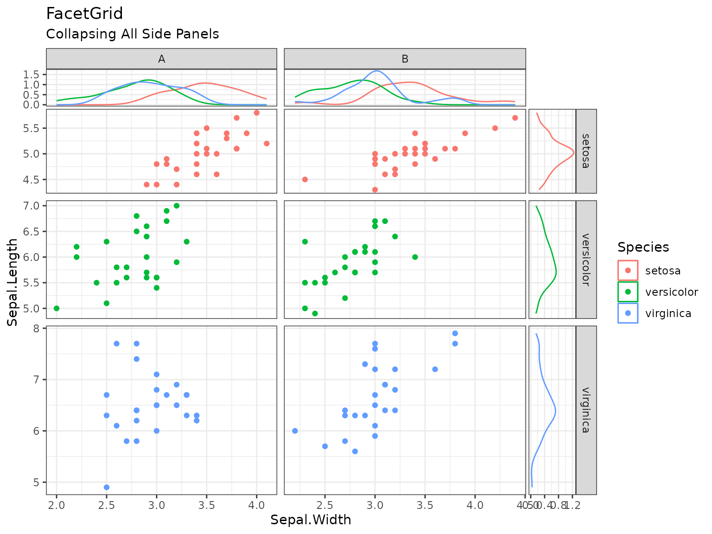
p + geom_xsidedensity(aes(y=after_stat(density)))+
geom_ysidedensity(aes(x=after_stat(density), ycolor = Species2)) +
theme_bw() +
facet_grid(Species~Species2, space = "free", scales = "free") +
labs(title = "FacetGrid", subtitle = "Collapsing All Side Panels") +
ggside(collapse = "all")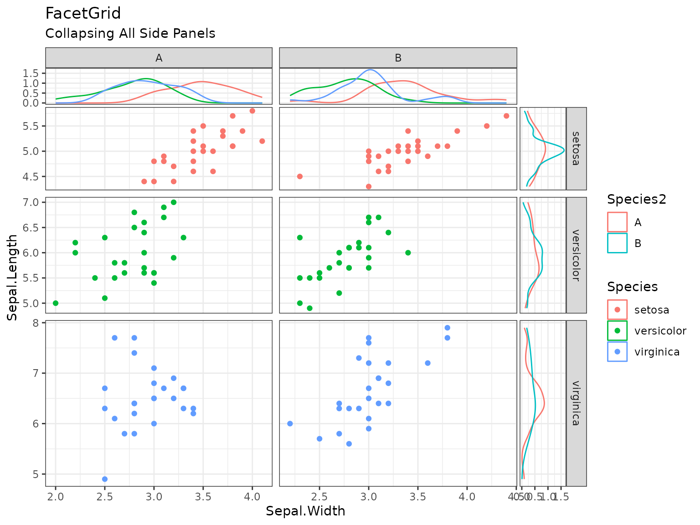
p + geom_xsidedensity(aes(y=after_stat(density), xfill = Species), position = "stack")+
geom_ysidedensity(aes(x=after_stat(density), yfill = Species2), position = "stack") +
theme_bw() +
facet_grid(Species~Species2, space = "free", scales = "free") +
labs(title = "FacetGrid", subtitle = "Collapsing All Side Panels") +
ggside(collapse = "all") +
scale_xfill_manual(values = c("darkred","darkgreen","darkblue")) +
scale_yfill_manual(values = c("black","gold")) 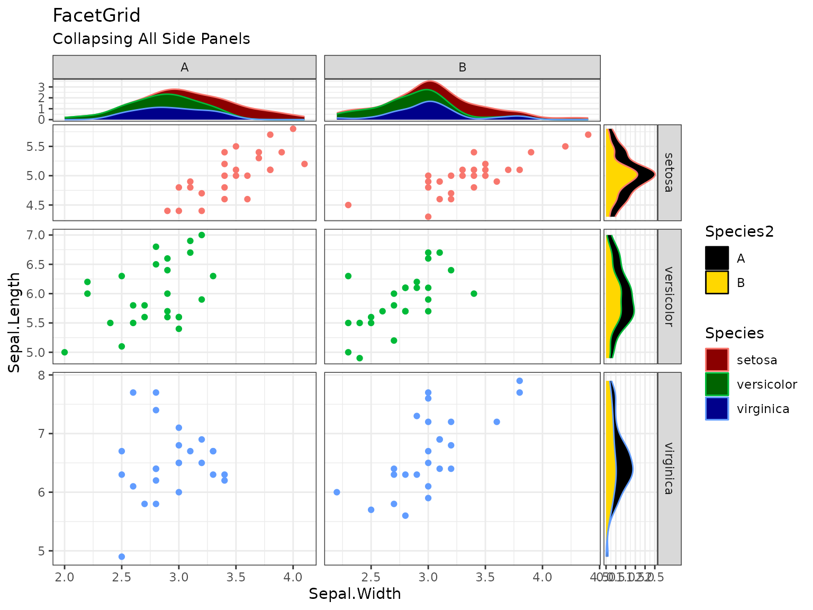
Note that when collapsing panels on FacetGrid, the
panels appear under the strips whereas on FacetWrap they
appear above the strips. This is because FacetWrap,
collapsing panels in the same column or row may not share the same facet
variable, which would be confusing since the strip would not represent
the data entirely. This is not the case with FacetGrid
since each row or column is dictated by the facet variable.
Collapsing on an x or y coerces all panels in that column or row to
the same scale, thus scales = "free_x" is incompatible with
collapse = "x".
p2 + facet_wrap(Species~Species2, scales = "free") +
labs(title = "FacetWrap", subtitle = "Collapsing X side Panels") +
ggside(collapse = "x")
#> Warning: free x scales is not compatible with collapse x. Assigning new x
#> scales.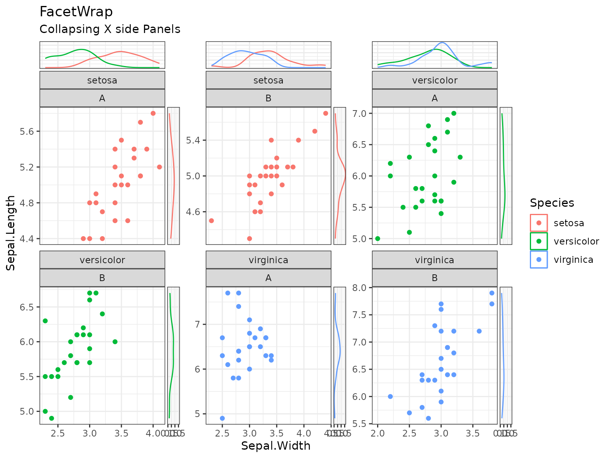
You may also change the size of the side panels with the theme
elements ggside.panel.scale,
ggside.panel.scale.x and ggside.panel.scale.y.
These theme elements take a positive numeric value as input and indicate
how large the side panel’s heights or widths are relative to the main
plot’s height or width. For example, setting
ggside.panel.scale.x = 1 will mean the x side panels height
will be equal in size to the main panel’s heights (or if x is collapsed,
is equal to the sum of the heights).
p2 + facet_grid(Species~Species2, space = "free", scales = "free") +
labs(title = "FacetGrid", subtitle = "Collapsing X Side Panels and \nAdjusted Side Panel Relative Size") +
ggside(collapse = "all", x.pos = "bottom", scales = "free_x",
respect_side_labels = "y") +
theme(ggside.panel.scale.x = .4,
ggside.panel.scale.y = .25)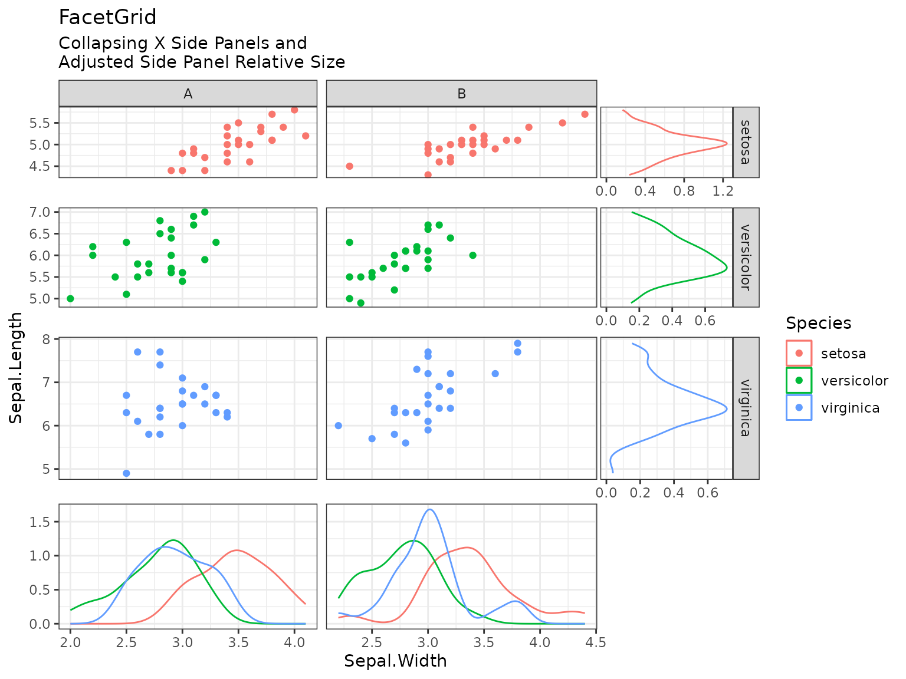
Specifying ggside Axes
As of ggside (>= 0.1.0) you can now have further
control over how a side axis will render. For example, when making a
xside geometry, the x-axis was shared with the main panel
so you can specify how the x-axis is rendered via the
scale_x_* functions. Prior to
ggside (>= 0.1.0) you had no control over the y-axis of
the xside panel. Now, you can use
scale_xsidey_(continuous|discrete) functions to further
specify this scale. Similarly, you can do this for the x-axis of a
yside panel with
scale_ysidex_(continuous|discrete) functions. For all
intents and purposes, these are identical to the
scale_(x|y)_* functions but they only affect their
xside or yside panel’s non-shared axis.
Additionally, this allows you to mix continuous and discrete scales on the same y or x axis. For example the main panel y axis may be continuous and the side panel y axis may be discrete. Take the following example that was not possible prior to this version:
ggplot(mpg, aes(displ, hwy, colour = class)) +
geom_point(size = 2) +
geom_xsideboxplot(aes(y =class), orientation = "y") +
geom_ysidedensity(aes(x = after_stat(density)), position = "stack") +
theme(ggside.panel.scale = .3)Now we can provide the plot with the proper scale the panel will
expect. You can use the guide argument of these new scale
functions to further customize how the text is rendered, the
breaks argument to control the location or visibility of
the tick marks.
ggplot(mpg, aes(displ, hwy, colour = class)) +
geom_point(size = 2) +
geom_xsideboxplot(aes(y =class), orientation = "y") +
geom_ysidedensity(aes(x = after_stat(density)), position = "stack") +
theme(ggside.panel.scale = .3) +
scale_xsidey_discrete() +
scale_ysidex_continuous(guide = guide_axis(angle = 90), minor_breaks = NULL) 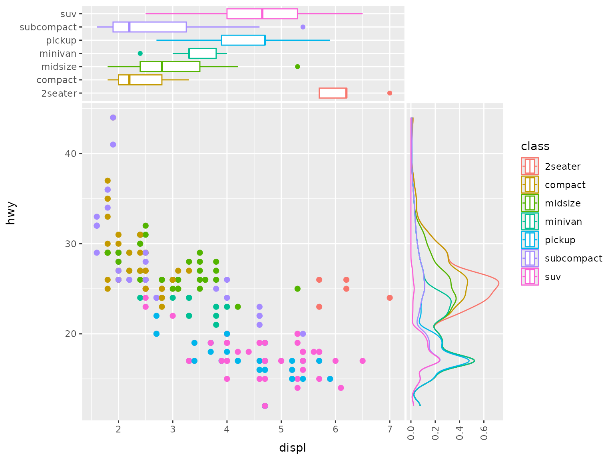